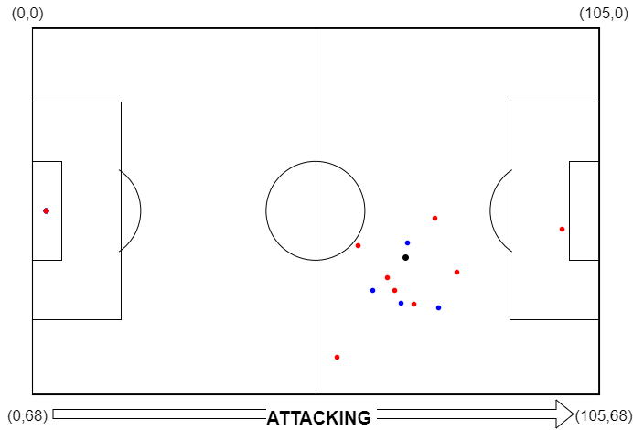

Unified and Integrated Event Data (UIED)
The UIED is an origninal designed to provide a standardize format for event data in football.
Event Class Standardization
Overall |
google research football |
Statsbomb |
Wyscout |
DataStadium |
|---|---|---|---|---|
Short Pass |
Short Pass |
Ground pass |
Goal kick |
Direct FK - Pass |
Low pass |
Free kick |
Indirect FK |
||
Half Start |
Simple pass |
KickOff |
||
Hand pass |
HomePass |
|||
Head pass |
AwayPass |
|||
Smart pass |
PKPass |
|||
Throw in |
Through Pass |
|||
ThrowIn |
||||
Feed |
||||
FrickOn |
||||
High Pass |
High Pass |
High pass |
High pass |
|
Long Pass |
Long Pass |
Ground pass |
Goal kick |
Direct FK - Pass |
Low pass |
Free kick |
Indirect FK |
||
Simple pass |
KickOff |
|||
HomePass |
||||
AwayPass |
||||
PKPass |
||||
Through Pass |
||||
ThrowIn |
||||
Feed |
||||
FrickOn |
||||
Shot |
Shot |
Shot |
Shot |
Shoot |
Free kick shot |
Direct FK - Shot |
|||
Carry |
Sprint |
Carry |
Acceleration |
|
Dribble |
Dribble |
Dribble |
Touch |
Dribble |
Touch |
||||
Cross |
Cross |
Cross |
CK |
|
Corner |
Free kick cross |
Cross |
Short Pass and Long Pass are determined by the pass length (45 meters).
“_” : end of possession, “period_over”, and “game_over” is added to end of each possession, period, and game.
Pitch Coordinates Standardization
{kind=link}
UIED Format
- The UIED format includes the following columns:
match_id (int): Unique identifier for each match.poss_id (int): Unique identifier for each possession within a match.team (str): The team associated with the event.home_team (int): Indicator of whether the team is the home team (1 for home, 0 for away).action (str): Simplified and normalized description of the event action.success (int): Indicator of whether the event action was successful (1 for success, 0 for failure).goal (int): Indicator of whether the event resulted in a goal (1 for goal, 0 for no goal).home_score (int): The current score of the home team.away_score (int): The current score of the away team.goal_diff (int): The goal difference (home_score - away_score).Period (int): The period of the match (1 for 1st half, 2 for 2nd half, etc.).Minute (int): The minute within the current period.Second (float): The second within the current minute.seconds (float): The total seconds elapsed since the start of the match, adjusted for different periods.delta_T (float): The time difference between the current event and the previous event in seconds.start_x (float): The x-coordinate of the event’s starting location, scaled by the field size.start_y (float): The y-coordinate of the event’s starting location, scaled by the field size.deltaX (float): The change in the x-coordinate from the previous event.deltaY (float): The change in the y-coordinate from the previous event.distance (float): The distance covered by the event.dist2goal (float): The distance from the event’s starting location to the center of the goal.angle2goal (float): The angle between the event’s starting location and the goal, in radians.
Examples for Standardizing Multiple Matches
Refer to the data provider pages to convet between single file and multiple file
Example of the UIED format for Wyscout:
import pandas as pd
from preprocessing import Event_data
event_folder = 'path/to/event/folder'
match_folder = 'path/to/match/folder'
max_workers = 1
wyscout_df=Event_data(data_provider='wyscout',event_path=event_folder,match_folder=match_folder,
preprocess_method="UIED",max_workers=max_workers).preprocessing()
print(wyscout_df.head())
Example of the UIED format for StatsBomb:
import pandas as pd
from preprocessing import Event_data
event_folder = 'path/to/event/folder'
sb360_folder = 'path/to/sb360/folder'
statsbomb_match_id = '12345'
#json/csv file
statsbomb_df=Event_data(data_provider='statsbomb',event_path=event_folder,
sb360_path=sb360_folder,preprocess_method="UIED",
max_workers=max_workers).preprocessing()
#api
statsbomb_df=Event_data(data_provider='statsbomb',statsbomb_match_id=statsbomb_match_id,
preprocess_method="UIED",max_workers=max_workers).preprocessing()
print(statsbomb_df.head())
Example of the UIED format for StatsBomb and SkillCorner:
import pandas as pd
from preprocessing import Event_data
event_folder = 'path/to/event/folder'
tracking_folder = 'path/to/tracking/folder'
match_folder = 'path/to/match/folder'
match_id_df = 'path/to/match_id.csv'
max_workers = 1
df_statsbomb_skillcorner=Event_data(data_provider='statsbomb_skillcorner',
statsbomb_event_dir=event_folder,
skillcorner_tracking_dir=tracking_folder,
skillcorner_match_dir=match_folder,
match_id_df=match_id_df,
preprocess_method="UIED",
max_workers=max_workers).preprocessing()
print(wyscout_df.head())
Example of the UIED format for DataStadium:
import pandas as pd
from preprocessing import Event_data
data_dir = 'path/to/data/folder' #the dir contain folders that contain the play.csv and tracking.csv files
df_datastadium=Event_data(data_provider='datastadium',
event_path=data_dir,
preprocess_method="UIED",
max_workers=max_workers).preprocessing()
print(df_datastadium.head())